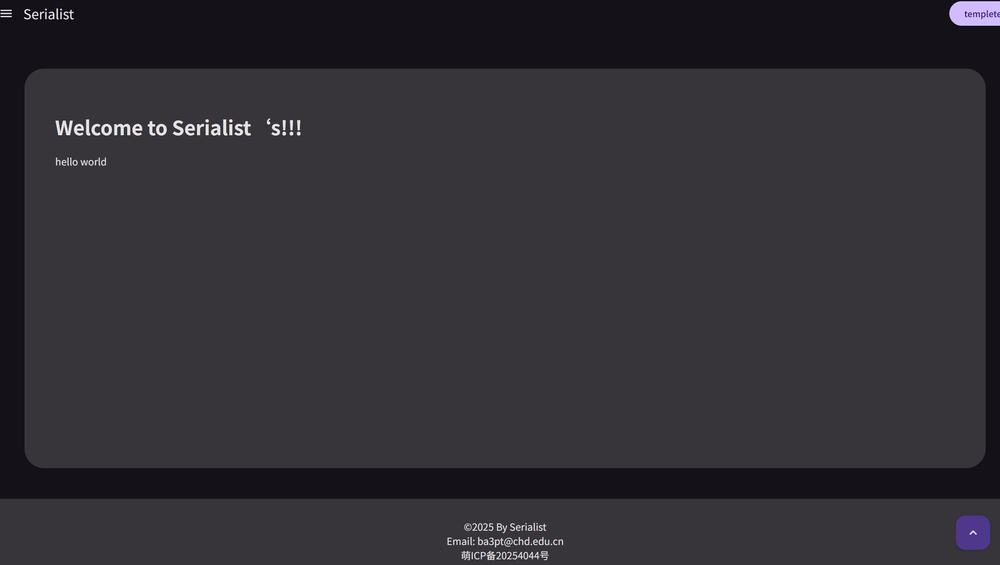

Welcome to Serialist‘s!!!
hello world
关于网站
虽然写的创建时间是 2024-10-05，但其实只有上面这两行是。这两行是整理电脑时，找到的 serialist.top 域名下的第一个 index.html。为了纪念就把这两行当作创建时间吧。
<h1>Welcome to Serialist‘s!!!</h1>
<p>hello world</p>
国庆节期间没事做，于是学了点前端，注册了第一个域名，白嫖了服务器，于是部署了 nginx 随便写了一个页面上去。后来服务器过期了就搁置了。
隔年春，了解到 MDUI 组件库，想起网站胎死腹中，于是又写了一点垃圾放在 github page 上。但由于水平不足，加之不太会用 git 导致仓库很乱，最后再一次废弃了。

网站小时候的照片
暑假间了解到 Markdown 和 tex，浅尝后发现自己做渲染有些麻烦，于是用了 MKdocs。博客框架建网站很友好，尤其是用的 python，因为我不太不想用 node。这时候也写了一些东西。
9 月左右了解到 Hongliu 也开始做博客后，我打开了许久没动的网站，决心重构。好在 AI 大力支持，加之再次认真学习，最终进化成了现在单页面网站的样子。其实一开始不知道 SPA，只是希望更好地复用如导航栏、页脚这些部件，而内容都由 md 文档的前端渲染，结果最后就改成单页面了。
网站的具体历史已记不清，只剩下了留下的文档的创建时间，和 whois 上的域名记录。为了冒充老资历，且当网站创建在 24 年 10 月吧，不过真正复活是在重构之后。
之前的内容，有的还没放回来，而有的已经永远找不到了（泣）。
关于博客
Blog，也就是 weB-LOG，互联网日志。
博客是传统的、也是最原始的互联网自留地。我喜欢看博客，尤其喜欢技术、生活、旅游内容的。
博客里有最安静的思考。博客和公众号、视频频道、推特、微博相似，但没有推送机制和嘈杂的评论。他更像自言自语，像流浪瓶，即使是有评论功能的博客，也更像是带批注的书。
能读进书是能静下心思考的表现。能认真写博客、读博客，或许也是类似吧。如今，静下心思考的能力如此难能可贵，这也是做博客的意义之一吧。